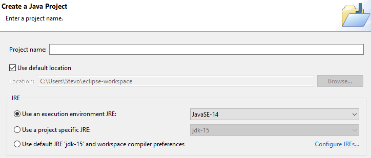
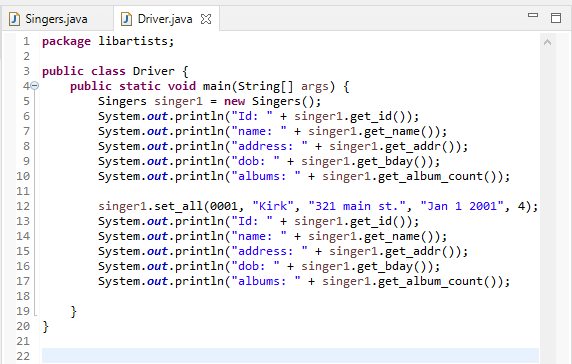
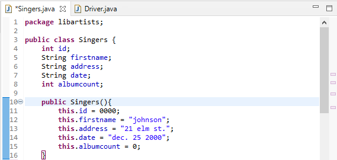

What we covered in this class was some of the basics. We use Eclipse as our IDE. Then we created 2 classes one for main to work with and a driver class that would hold the main.

Assuming that the Eclipse is installed along with the latest version of java we can create a project.
To create a project use the drop downs at the top and select new java project.
Fill in the basic information and we can click to start the project.
At some point we get a menu window that asks for the name of a package we want one of these everything else keep how it is.
The Essentials

There is no point in taking it slow. Java is easy and you will probably know how variables and loops work. The essential are the main driver class and its other classes.
Think that the driver class is just the class that has the main in it.
Any other class is just there to store information

Then just like the driver class that we just created we can create another class. In the file drop down you select new and work you way down to class.
With this added you can create whatever type of class you wish.
These are storage containers that variables and methods are tied to.
Make not of where the public and static keywords are they are important.